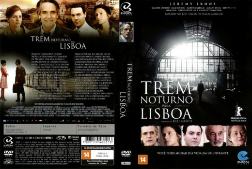

Trem Noturno para Lisboa (2013)


Only when you are lost can you truly find yourself

Avaliação (TMDb):


6.5/10 (328 votos)
Avaliação (Usuário):
Outro Título:Night Train to Lisbon
País:United States, 111 minutos
Idiomas falados:Inglês, Português
Gênero(s):Mistério, Romance, Suspense
Diretor(s):Bille August
Codec:MPEG-2 (DVD)
Número: 5250
Sinopse:
Raimund Gregorius, um professor suíço, que abandona suas palestras e sua vida conservadora para embarcar em uma emocionante aventura que o levará em uma jornada ao seu próprio coração.
Elenco:
Jeremy Irons, Mélanie Laurent, Jack Huston, Martina Gedeck, Tom Courtenay, August Diehl, Bruno Ganz, Lena Olin, Beatriz Batarda, Marco D'Almeida
Tipo de mídia: DVD R/RW,
Legendas: Português, Sem Legendas
Alugado: Não
Tela: Anamorphic Widescreen